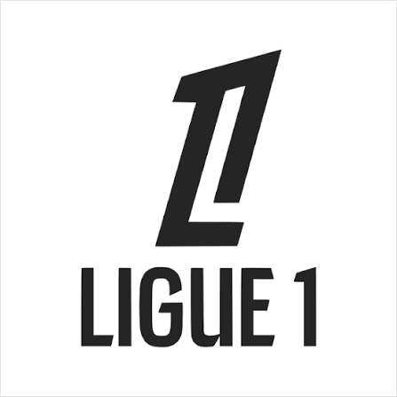

чемпиона́т Фра́нции по футбо́лу (фр. Le championnat de France de football) — профессиональная футбольная лига, высший дивизион системы футбольных лиг Франции.
Подробнее| Место | Игрок | Клуб | Голы | Пенальти |
|---|---|---|---|---|
| 1 | Синайоко | ПСЖ | 8 | 0 |
| 2 | Лепель | Лилль | 7 | 0 |
| 3 | Гуири | Марсель | 6 | 0 |
| 4 | Ваи | Ланс | 6 | 0 |
| 5 | Арчер | Тулуза | 6 | 0 |
| 6 | Тенгстедт | Брест | 5 | 0 |
| 7 | Яссин | Страсбур | 4 | 0 |
| 8 | Товен | Ренн | 4 | 0 |
| 9 | Ажорк | Нант | 4 | 0 |
| 10 | Думбия | Гавр | 4 | 0 |
| Место | Команда | И | В | Н | П | Мячи | Очки | Последние матчи |
|---|---|---|---|---|---|---|---|---|
| 1 | ПСЖ | 9 | 6 | 2 | 1 | 21-10 | 20 | ВВВВВ |
| 2 | Лилль | 9 | 5 | 3 | 1 | 12-6 | 18 | ННПВН |
| 3 | Лион | 9 | 5 | 2 | 2 | 15-7 | 17 | ВВПВП |
| 4 | Париж | 9 | 5 | 2 | 2 | 16-10 | 17 | ППВВВ |
| 5 | Ренн | 9 | 5 | 1 | 3 | 20-19 | 16 | ППВВВ |
| 6 | Марсель | 9 | 5 | 0 | 4 | 20-13 | 15 | ПВПВП |
| 7 | Монако | 9 | 4 | 3 | 2 | 12-10 | 15 | ВНПВВ |
| 8 | Ницца | 9 | 4 | 2 | 3 | 13-12 | 14 | ВВПВВ |
| 9 | Ланс | 9 | 4 | 1 | 4 | 16-13 | 13 | ВВПВП |
| 10 | Брест | 9 | 3 | 3 | 3 | 16-12 | 12 | НПНВВ |
| 11 | Лорьян | 9 | 3 | 3 | 3 | 7-8 | 12 | ВВВПП |
| 12 | Тулуза | 9 | 2 | 4 | 3 | 12-13 | 10 | ПВННВ |
| 13 | Страсбур | 9 | 3 | 1 | 5 | 17-19 | 10 | ППППВ |
| 14 | Осер | 9 | 3 | 1 | 5 | 13-23 | 10 | ВВППВ |
| 15 | Анже | 9 | 2 | 2 | 5 | 9-17 | 8 | ВПППП |
| 16 | Труа | 9 | 2 | 2 | 5 | 7-16 | 8 | ННППП |
| 17 | Ле-Ман | 9 | 1 | 4 | 4 | 11-18 | 7 | ПВППП |
| 18 | Гавр | 9 | 0 | 2 | 7 | 9-20 | 2 | ВПППП |
| Место | Игрок | Клуб | Голы | Матчи | Мин/Гол | Пенальти |
|---|---|---|---|---|---|---|
| 1 | Синайоко | ПСЖ | 8 | 9 | 0 | 0 |
| 2 | Лепель | Лилль | 7 | 9 | 0 | 0 |
| 3 | Гуири | Марсель | 6 | 9 | 0 | 0 |
| 4 | Ваи | Ланс | 6 | 9 | 0 | 0 |
| 5 | Арчер | Тулуза | 6 | 9 | 0 | 0 |
| 6 | Тенгстедт | Брест | 5 | 9 | 0 | 0 |
| 7 | Яссин | Страсбур | 4 | 9 | 0 | 0 |
| 8 | Товен | Ренн | 4 | 9 | 0 | 0 |
| 9 | Ажорк | Нант | 4 | 9 | 0 | 0 |
| 10 | Думбия | Гавр | 4 | 9 | 0 | 0 |
| Место | Игрок | Амплуа | М | ГП | КП | %ТП | %ТДП |
|---|---|---|---|---|---|---|---|
| 1 | Товен | НАП | 9 | 7 | 23 | 66 | 54 |
| 2 | Кассерс | ПЗ | 10 | 6 | 25 | 83 | 52 |
| 3 | Синайоко | НАП | 10 | 5 | 16 | 76 | 85 |
| 4 | Нанаси | ПЗ | 7 | 3 | 7 | 85 | 90 |
| 5 | Яссин | НАП | 10 | 3 | 7 | 76 | 45 |
| 6 | Гуири | НАП | 9 | 3 | 10 | 83 | 42 |
| 7 | Эмерсон | ЗЩ | 9 | 3 | 8 | 82 | 17 |
| 8 | Февр | ПЗ | 10 | 3 | 16 | 76 | 54 |
| 9 | Кацерис | ЗЩ | 5 | 3 | 3 | 60 | 50 |
| 10 | Диоп | ПЗ | 9 | 3 | 9 | 75 | 59 |
| Место | Игрок | Амплуа | М | С | С/М | СМ | ПГ |
|---|---|---|---|---|---|---|---|
| 1 | Мвого | ВР | 9 | 28 | 3.1 | 5 | 8 |
| 2 | Озер | ВР | 8 | 27 | 3.4 | 5 | 5 |
| 3 | Трапп | ВР | 9 | 21 | 2.3 | 4 | 8 |
| 4 | де Ланге | ВР | 9 | 36 | 4.0 | 3 | 13 |
| 5 | Грейф | ВР | 7 | 27 | 3.9 | 3 | 6 |
| 6 | Антони Лопеш | ВР | 9 | 36 | 4.0 | 3 | 17 |
| 7 | Сафонов | ВР | 10 | 31 | 3.1 | 3 | 10 |
| 8 | Конате | ВР | 3 | 10 | 3.3 | 2 | 1 |
| 9 | Рест | ВР | 9 | 21 | 2.3 | 2 | 11 |
| 10 | Градецки | ВР | 9 | 31 | 3.4 | 2 | 10 |